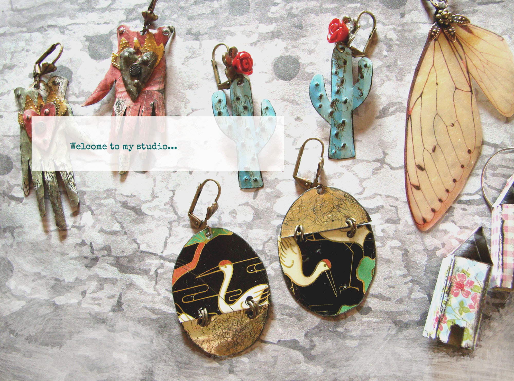

Curiosa Pérez - kreative Werkstatt
Welcome to my studio, home of unique and affordable sterling, gemstone and Light weight tin jewelry. I create heirloom quality jewelry for all occasions - everyday, bridal, bridesmaid, groom, pet identification tags, message jewelry, mommy jewelry, and memorial pieces as well as keychains, earrings, and guitar picks. Look around and check out the selection of handmade hoops, hammered discs, stamped recycled copper and eco-friendly sterling items.
You can build your jewelry from the ground up, beginning with the blank disc and choosing letters, designs, gemstones, and finishes. Let's create a beautiful, affordable, unique gift together. I will make your item with care, wrap it beautifully, and ship it to you quickly.
Light weight tin jewelry, an unusual gift...you've found it here...tin jewelry: one of a kind artisan pieces and tin is the symbol of the 10th wedding anniversary. Humble materials, uncommon jewelry: jewelry with a nod to the environment: recycled, repurposed artisan tin jewelry made with cold connections.